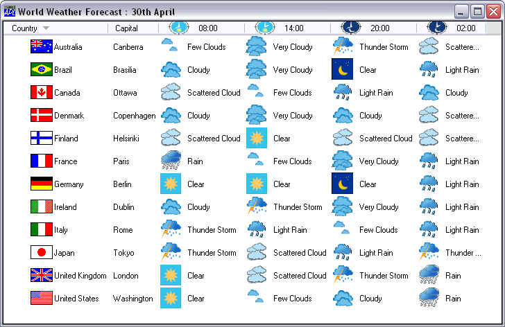

The ListView object may now display icons against column titles and items in Report View.
In Report View, the HeaderImageList property identifies the ImageList object containing the icons, and the HeaderImageIndex property specifies which icons from this ImageList are to be displayed in which column headings.
In the example shown below, the ImageList identified by HeaderImageList contains 4 icons for the 4 different times of day shown in the column headings and HeaderImageIndex is ¯2 0 1 2 3 4. The value ¯2 specifies the standard sort down symbol.
In Report View, the ReportImageIndex property now overrides the ImageIndex property and additionally specifies which icons, from the ImageList specified by ImageListObj, are to be displayed against each item in the matrix specified by ReportInfo.
ReportImageIndex is a matrix whose first column specifies the indices of the icons to be displayed against the Items of the ListView, and whose subsequent columns specify the indices of the icons to be displayed against the elements of ReportInfo.
i.e. if non-scalar, (⍴ReportImageIndex)←→(0 1+⍴ReportInfo)
In the example shown below, the ImageList associated with ImageListObj contains icons for each country's flag, followed by icons for the different types of weather.
ReportImageIndex[;1] is ⍳⍴COUNTRIES
ReportImageIndex[;2] is 0
ReportImageIndex[3 4 5 6;] is a set of integers (>⍳⍴COUNTRIES) which index the weather icons

The ReportBCol property optionally specifies the background colours for each element in Report View. Its first column refers to the Items themselves, and subsequent columns to the elements of ReportInfo.
i.e. if non-scalar, (⍴ReportBCol)←→(0 1+⍴ReportInfo)